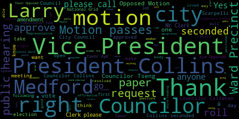
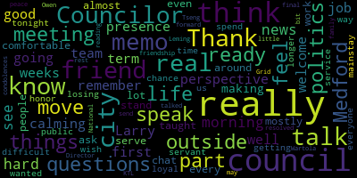

AI-generated transcript of City Council 10-15-24
English | español | português | 中国人 | kreyol ayisyen | tiếng việt | ខ្មែរ | русский | عربي | 한국인
Back to all transcripts
Heatmap of speakers
[Bears]: October 15th, 2024. Mr. Clerk, please call the roll. Present. Thank you, Councilor Kellogg. Vice President Peralta.
[Lungo-Koehn]: Present.
[Hurtubise]: Councilor Lazzaro. Present.
[Lungo-Koehn]: Councilor Leno. Present. Councilor Skidmore.
[Hurtubise]: Present. Councilor Tseng? President Bears?. Present. Councilor Ferris.
[Bears]: Present.
[Hurtubise]: I'm present, none absent. Meeting is called to order. Please rise, salute the flag.
[Bears]: I pledge allegiance to the flag of the United States of America and to the Republic for which it stands, one nation, under God, indivisible, with liberty and justice for all. 24-479, resolution to celebrate Sarah Bradley Fulton Day.
Be it resolved by the Medford City Council that we encourage residents to attend the celebration of Sarah Bradley Fulton Day on Saturday, October 19th, 2024. Be it further resolved that we thank Laura Duggan and the city employees and volunteers who make this day possible. More information can be found at lookingbackatmedfordhistory.com. This is my paper. I'll just add there's also a reception at the library on Friday night. Councilor Collins.
[Collins]: Thank you for putting this forward, and I motion to approve.
[Bears]: I motion of Councilor Collins to approve, seconded by Councilor Tseng. All those in favor? Aye. Opposed? Motion passes. 2-4-4-8-0. You know what? Motion to table this to the next meeting, if that's acceptable to anyone here. I can't make the motion. Can anyone make it?
[Collins]: Yeah, it's in the table.
[Bears]: So I moved. All right. On the motion of Councilor Collins to table that to the next meeting, seconded by Councilor Leming. All those in favor? Aye. Opposed? Motion passes. Councilor Collins.
[Collins]: Motion to join all the records and reports of committees and then take paper 24483 from the hands of the clerk.
[Bears]: The motion to join and approve the approval of the records and reports of committees. Second. Seconded by Councilor Leming. All those in favor? Aye. Opposed? Motion passes. Councilor Scarpelli, how do you find the records? Thank you. Anyone who wants to comment on any of the committee reports? All right, all those in, we need another vote. On the motion to approve records and committee reports, all those in favor? Aye. Opposed, motion passes. Oh, was it a first joining up? Sorry, my bad. 24483, offered under suspension by Vice President Collins, be resolved at the Medford City Council hearing, update from the representatives. All right. What number? Okay. Are you withdrawing that paper? Are you withdrawing paper 24483? All right, paper 24483 is withdrawn. On the motion to suspend the roll to take paper 24482 by Councilor Collins, seconded by Councilor Tseng. All those in favor? Opposed? Motion passes. 24482, offered under suspension by the entire Medford City Council, be it resolved by the Medford City Council that we hold a moment of silence in honor of our beloved City Messenger, Lawrence Lepore, who passed away last night from cancer, an Army veteran, Larry loved, lived, and breathed Medford. He loved City Hall. He loved his job as city messenger, and he loved working with this council and his colleagues in the clerk's office. He was a calming and steady presence at council meetings, and he provided wise counsel to anyone who sought his advice. We offer our deepest and most sincere condolences to Larry's family, to his friends, and to all who loved him, be it further resolved that the Medford City Council dedicate tonight's meeting in Larry's memory. Councilor Collins.
[Collins]: Thank you, President Bears. This is a hard one. It's been hard over these past few months not having Larry with us in the chambers like he always, always has been for years and years. It's hard to wrap my head around this, and it's hard to sum up so much of what Larry represented, but Larry was so kind. He was so generous with his insight and his experience from so many years of working in City Hall. When I joined the Council three years ago, you know, I felt a little out of place, a little, a little new kid on the block. And this is just one example of how unflaggingly kind a person Larry is. He never, ever treated me any different than any other Councilor. He was kind, he was welcoming, he was welcoming, he took me seriously. And I know that that's how he treated absolutely everybody in his orbit. So he will be so missed. And I joined my colleagues in sending our most sincere condolences to his family.
[Bears]: Thank you, Councilor Lazzaro, then Councilor Saint, then Councilor Leming.
[Lazzaro]: I didn't know Larry for very long, but I really appreciated that he, what I did know of him was that he was really fun and he was really kind. And he was really nice to my kids when he dropped off packets at my house. And if I can be remembered that way, I would consider myself very lucky. He had my back literally and figuratively. It was really nice having him behind me when he was here. I had a kind of a tough time at a few meetings in the beginning of my tenure here. And he was very steady in presence, really, really, really nice about stuff and really kind to me and funny and cheerful and steady. And I hope he and I hope he rests in peace and I hope his family finds comfort and how well loved he was here.
[Tseng]: Thank you. It was really, really hard for me to see this news this morning, because I think, just From my own perspective, Larry's been such a calming presence here on the city council. He, you know, is such a good friend. And I think above all it's that him being a friend. I'm going to remember really well. The first few weeks of my term when he really was that part part of that team that like welcome to me and to doing this job. to making me feel comfortable to be myself, to speak up, to serve the people. He really taught me a lot about who to talk to and, you know, who to ask questions to here. But it's even outside of that work, after our council meetings, almost every council meeting, him and I And a few other Councilors would stand around and chat, talk about life, talk about things outside of Medford politics, and then things about Medford politics, but mostly just about life. And I think getting to know him that way was a real, real honor. I wish everyone had the chance to spend that time with him. It's really, really difficult, I think, for me to speak tonight, because this is a friend that we're losing. and such a loyal public servant to our city. A real mainstay of the city council, who's been here longer than any of us. So I wanted to thank him for all of that service, for his friendship, and to send my condolences to his family. And may he rest in peace. Thank you, Councilor Tseng. Councilor Leming.
[Leming]: Thank you. So, when I first in the time before, and I ran for council in the time that I was running one thing that I learned is that there are a lot of people in the city who hold politics above personal relationships. Because when I said that I'm running as a progressive, those are my ideals. And then you end up making a decision that maybe some person doesn't like, you kind of notice that there's a lot of folks in the city who will turn on you after that. And that's happened to me quite a few times with relationships that I've had with various folks around the city. I've noticed that Larry was one of the few people who truly did not matter to him. There's a few other people like that where you could tell it's just whatever happens politically, whatever happens in the chambers, it just doesn't matter to them. They'll always value their relationship. They'll always value who you are as a human being above all of that. They really know how to remain neutral and respect the person. And so it made me respect and miss him a lot more, even though I haven't known him as long as some of my colleagues had. gave him a phone call, gave him a phone call over the summer. And after he'd been hospitalized, talked for a little bit. Remember, I just asked him about the history of the, you know, Medford politics, because we're having some contentious meetings here. And he said to me, Matt, it's always been that way. So this was a guy who, he'd been around the block a few times, and he knew that at the end of the day, it's the person that matters. It's none of this, all of this is ephemeral. So I miss him.
[Callahan]: Yeah, I also did not know him nearly as well as I wish I had, but I think we will really never be able to replace him. No matter who we get for this position, we won't be able to replace him because of his personality and because of who he was. So I'm, you know, someday we'll have someone in that position. They'll be different, but Larry is definitely truly missed.
[Bears]: Thank you, Councilor Callahan. Councilor Scarpelli.
[Scarpelli]: Thank you. Larry Lepore, someone we should all celebrate to know and be honored that he was our friend. It's been a while since you take that ride down Main Street and you notice his car's gone. At Alexander's, one of his favorite spots. Or the knock on your door and just so he can pat my dog. Or sometimes he would sneak away because he knew Dina was coming with Biscotti. And he would always be so kind. And I think that's what we hear over and over about Larry. He never let politics get in the way of anything. He was just such a good person. And even if you had a bad day, he'd tell you, he'd lend you that word that you're doing the job that people elected you to do and made you feel that whatever you felt in yourself that it was the right thing to do. And I'm going to miss him. I'm going to miss him so much because I think a lot of us, even though if you didn't know Larry long, it's amazing how you captured his spirit. Even a night like tonight. You know, he'd look at me and we'd make eye contact with some stupid comment I'd make and I'd feel, oh, I owe him something later. Or when someone would come up and they'd say something silly and he'd look at me with this like, are you kidding me type of face. But he never did it with disrespect or without honor. He was such a good person. And I know the cancer that he fought at the end was very tough, very painful. And my condolences to his family. Thank you, Councilor Scarpelli.
[Bears]: You want to go? All right. Mr. Clerk.
[Hurtubise]: Thank you, Mr. President. I loved Larry. I mean, he was amazing. He became one of my dearest friends. having trouble looking at his empty chair right now. I'll miss him for a long time. He was a, I looked forward to his visits to the clerk's office on Friday afternoons after the building shut down. He and I solved a lot of the world's problems between 1230 and two o'clock on Fridays. He was a, I mean, in addition to being a paratrooper who threw himself out of perfectly good airplanes in the army, he was a, you know, he worked at the housing authority, but he was also a disc jockey. And he was an authority on country music. He knew I was a Springsteen fan, but he also knows that I love country music, and he knows that my favorite country music stars are Chris Christopherson and Waylon Jennings and Johnny Cash. And so he came in one Friday and told me 37 things about Waylon Jennings that I didn't know. And then he came in and told me 37 things about Johnny Cash I didn't know the next week. And he only told me a couple of things I didn't know about Christopherson, because I was raised on him when I was two. And then the picture over there on his desk, he came into the office on a Friday afternoon, wearing a Johnny Cash at Folsom prison t-shirt. And I said, stand there and don't move until I've recorded this on film. And he is standing there in the office wearing a Johnny Cash t-shirt from, you know, I mean, throwback to 1968. And he was, outrageously funny. He was outrageously kind. Some of the conversations that we had, some of the conversations you had with him out in that parking lot, they're not conversations we can repeat, but he was outrageously funny and he was kind to everybody. And he was a mentor and a dear, dear friend, and I'm just gonna miss him forever. Thank you, Mr. President.
[Bears]: Thank you, Mr. President. I'm gonna go to Kevin Harrington from Medford Community Media, Kevin. Go ahead.
[Harrington]: Hello there. Can you hear me OK?
[Bears]: We can hear you, yeah.
[Harrington]: Excellent. I normally don't, Kevin Harrington, Medford Community Media, 49 Windsor C. I don't usually jump on these meetings from this side of the Zoom call, but I would be remiss if I didn't call out Larry. Like many have mentioned, When I came in here, when I started coming into the booth and figuring out the chambers, Larry was always so welcoming, so easy to talk to, and just someone who was always so pleasant and made me feel a little less intimidated. every time I walked in the chambers. Um, I also, you know, was lucky enough to be raised to appreciate that there's people in life that for any given event, for any given party, for any meeting, there's the people that show up early and have to stay late. And, uh, Larry did that to a T from, for all the time I was there. Um, you know, I didn't have to go into the booth every day, but, Even from monitoring the meetings from home, you could tell Larry was there, getting there early to put out the name placards, making sure there was water. And he would stay and keep me company while I was breaking things down and turn the lights off. So yeah, I just want to echo what everyone's saying. And I'm sure his family are going through it right now. But I hope it offers them a little bit of healing to know how much he touched So many people here in Medford, in the city of Medford, and he will be sorely missed.
[Bears]: Thank you, Kevin. I have some words from former President Morell here. She was hoping to be here, but I think in fitting for Larry, we had a long night. She says, I want to send my deepest condolences to Larry's family, to thank them for sharing Larry with the city all these years. who's an incredible steward of the city council and the chambers and was so dedicated to his role. He'll be truly missed both as an individual and for all he brought to this body. And I get the difficult task of going last, but Larry once said to me, so long as you're not throwing chairs at each other, it's a good night. Because I think he saw someone almost throw a chair at someone. maybe this side to this side. I think anyone who's only sat on this side has missed out sitting over here and seeing Larry's face and being able to make that eye contact with him. And sitting up here too, it's been interesting the first few months of this term, but I didn't get to know Larry as well as I wanted. I've known him for five years. The first few years were the pandemic. We were on Zoom. Larry's still coming to my house every day, every Friday, bringing the papers and whatnot, but didn't get uh, really to get to know him until we were back here and we were able to talk more before and after meetings during expected and unexpected recesses. Um, but I always like to think of it kind of how Councilor Scarpelli did. If you were hearing words of encouragement from Larry, he didn't have a great day, but he, he presented it in a nice way. If you're having words of respect from Larry, you had a decent day. He did. All right. And if you had words of pride from Larry, you had a really good day. And I was lucky enough to experience all three. I probably have a warped sense in my mind that may be more pride than encouragement, but it was really just helpful to be able to talk to Larry about just have all that knowledge, decades of knowledge of this body and these meetings, to talk to someone with a different perspective on a lot of issues, but then find a lot of common ground. And I know that he will be missed by this body, by the former members, by a lot of people in City Hall and certainly by his family. He was just a really wonderful, kind, caring person who I really enjoyed spending time with in the limited ways that I was able to. And I know there are a lot of people who got to enjoy a lot more time with Larry who aren't going to be able to share that time with him anymore. So I'm thinking of them because if I feel this way, I can only imagine how they feel. Thank you. The motion of everybody. Oh, we have some people to speak. Yes, public participation will take you.
[Leona]: Thank you, Mr. President. I've lived in this city for 77 years now. And I would have to say Larry Lepore was one of the nicest people I've ever met. And when I met him, it was sort of an odd situation. I had just got back from six months of military duty, and I had just got married. And my wife and I went to our favorite place, North Conway, a little restaurant on West Side Road, called the Clam Box, or something to that effect, Lobster Trap, I'm sorry. And after dinner, some guy starts yelling at me, go on over here. I turn and I look, and it's two guys. and cowboy hats with their wives. And it was a young guy that I went to law school with by the name of Bobby Penta. And Bobby said, come over here, I want to introduce you to somebody. He introduced me to Larry LaPore. Now I've been married 53 years now. And I gotta say, it's a long time to know somebody. And when I would come up here, even if there was only one of these left, Larry would give me his copy, because that's the type of guy he was. And I will miss him, going down to Alexander's and seeing him and his group. He's just one of the nicest people I've ever met. Thank you. Thank you.
[Castagnetti]: I'm shocked and I'm sad. I think I first met him in 1980, my first time ever voted for Ross Perot, I think, from Texas, the chicken man. Can I finish, can I finish, can I finish? And I think I started coming to the council meetings about that time. I was not a youth either, I was already past my teens. And I had to love the guy, you know, he's just such a beautiful man. I'm going to miss him at our coffee talk at Alexander's. He was such a class act. He was a true gentleman. And I'm extremely sad. He was funny a lot of times also. Once over here by his desk, he says, hey, you're the eighth Councilor. I had a crack up. So he had such a charisma about him. It's a true gentleman. And he'll be missed. I hope his wife's doing okay. And do you know anything about the funeral arrangements? Do you know anything yet?
[Bears]: We don't, but we'll share it and the clerk's office will make it available and we'll get it around when we know more. And we're trying to also make sure that the city provides as many honors as we can provide.
[Castagnetti]: Rest his soul, he'll be in good shape in heaven.
[Bears]: Thank you, Andy. Is there someone who can make Zack Bares and Andy Castagnetti and George Scarpelli all cry? That's a good guy. Councilor Collins.
[Collins]: I would motion for a moment of silence upon passage and also to dedicate this meeting in Larry's honor, though really he deserves a year's worth of council meetings.
[Bears]: Bobby, do you want to say anything? On the motion, I just, it looked like you stood up to speak. Did you want, all right, got it. Thanks, Bob. On the motion to approve and have a moment of silence by Vice President Collins, seconded by Councilor Tseng. We'll take a moment of silence. All those in favor? Opposed? Motion passes. President Pierce? Council Vice President Collins.
[Collins]: I would motion to suspend the rules to take paper 24-477. On the motion to take paper 24-477 and 24-478 under suspension.
[Bears]: All those in favor? Seconded by Councilor Tseng. All right, I'll be quick, and Aaron can get home. Thank you to Aaron and Bill from the Election Commission for being here. We have our two calls to election, which we gotta get out the door. Be it ordered that the Elections Commission be and is hereby authorized and directed to notify and warn such of the inhabitants of the city of Medford as were qualified by law to vote for candidates at the state election on Tuesday, November 5th, 2024, to assemble at the polling places. in their respective wards and precincts, and then to give their votes for President and Vice President, Senator in Congress, Representative in Congress, Councilor, Senator in General Court, Representative in General Court, Clerk of Courts, Register of Deeds, and that the polls of said state election shall be open at 7 a.m. and remain open until 8 p.m., be it further order that the following name polling places be in or hereby ordered designated for use at the state election on November 5th, Ward 1, Precinct 1, Andrews Middle School. Ward 1, Precinct 2, Firefighters Club. Ward 2, Precinct 1 and Ward 2, Precinct 2, Roberts Elementary School. Ward 3, Precinct 1, Medford American Legion. Ward 3, Precinct 2, Temple Shalom. Ward 4, Precinct 1, Tufts University, Gantry Center, rear. Ward 4, Precinct 2, Walkling Court, Fondacaro Center. Ward 5, Precinct 1 and 5, Precinct 2, Missittuck Elementary School. Ward 6, Precinct 1, West Medford Fire Station. Ward 6, Precinct 2, Brooks Elementary School. Ward 7, Precinct 1, Mystic Valley Towers. Ward 7, Precinct 2, McGlynn Elementary School. Ward 8, Precinct 1, Medford Senior Center. And Ward 8, Precinct 2, South Medford Fire Station. And we also have the election warrant, uh, which is largely the same thing, but, uh, from the residents of the city greetings, we are required to notify and warn the inhabitants of said town or qualified to vote in elections to vote at the polling places. I just listed on Tuesday, the 5th day of November, 2024 from 7am to 8pm. for the following purposes to cast their votes in the state election, for the candidates of the political parties for the following offices, President and Vice President, Senator in Congress, Representative in Congress, Councilor for the 6th District, Senator in General Court for the 2nd Middlesex. I'll go to the Actions Commission if they have anything they'd like to add.
[Diana Cuddy]: No, we're all set. Thank you for your time tonight.
[Bears]: Thank you, Member DiBenedetto and Member O'Keefe. We appreciate it. Vice President Collins.
[Collins]: Motion to approve.
[Bears]: On the motion to approve, Should we, I think we should probably take a roll call on each paper, just given the nature of it. I'm going to throw a chair. Great. Great. That's what we like to hear. Clean, fair, and well-staffed elections. All right, on the motion on paper 24447, the call for election. Mr. Clerk, please call the roll on Councilor Collins, seconded by Councilor Callahan.
[Hurtubise]: Councilor Callahan.
[Lungo-Koehn]: Yes.
[Hurtubise]: Vice President Collins.
[Lungo-Koehn]: Yes.
[Hurtubise]: Councilor Lazzaro? Yes. Councilor Leming? Yes. Councilor Scarpelli? Yes. Councilor Tseng?
[Bears]: Yes.
[Hurtubise]: President Paris?
[Bears]: Yes. Affirmative, none negative. The motion passes on paper 24-478, the election warrant. Motion to approve. Motion approved. Councilor Tseng, seconded by Councilor Lazzaro. Mr. Clerk, please call the roll.
[Hurtubise]: Councilor Callahan? Yes. Vice President Collins?
[Collins]: Yes.
[Hurtubise]: Councilor Lazzaro? Yes. Councilor Leming? Matt? Yes. Councilor Scarpelli. Yes. Councilor Tseng. Yes. President Bears.
[Bears]: Yes. I have the affirmative and then I give a motion passes. Thank you very much. Good luck. Early voting starts on Saturday, right? Yes. All right. Vice President Collins.
[Collins]: Motion to revert to regular order of business, and then to take paper 24-457 from the table, to take both national grid papers.
[Bears]: On the motion to take papers 24472 and 244, 24, sorry, what is that? 4-5-7. 4-5-7, all right. Good night, thank you. All right, all those in favor, or second by? Seconded by Councilor Lazzaro, all those in favor? Opposed? Motion passes. 24472, petition for grant of location, National Grid, Hale Avenue. So this is not the one that was on the table. You are hereby notified, sorry, notice for public hearing, petition of grant of location, National Grid. . Thank you. Medford MA, motion to waive the reading for summary. On the motion of Councilor Collins, seconded by Councilor Leming. All those in favor? Aye. Opposed? Motion passes. This is a proposal, public hearing on Tuesday, October 15th, 7 p.m. Zoom link posted no later than Friday, petitioned by Boston Gas DBA National Grid for installing a new gas main in Hale Avenue, plan marked W01530950 Hale Avenue, Medford MA, date of July 20th, 2023, The purpose of this position is to install approximately 160 feet of new gas main in Hill Street in accordance with plan DPL MED 080248-1043 filed in the office of the city clerk. This has been approved by the chief engineer, city engineer with the following conditions. The engineering division recommends this grant application be approved with the following conditions. Granted location is limited to the approximately 160 feet of four inch gas main depicted on the plan. Before starting work, the contractor shall notify DigSafe and obtain all applicable permits from engineering division. Project must obtain a trench permit pertinent to section 74-141 of the city ordinances prior to commencing work. No other utility structures, conduits, duct banks, or other appurtenances are adversely impacted. National Grid shall insure all sewer, water, and drain lines are marked prior to excavation. Project site must be swept daily after installation or daily, shall be kept free of debris for the duration of installation, at least 72 hours prior to the start of the project. National Grid must coordinate and better communications with the Director of Communications and submit any required information that may be requested to effectively inform the public. call 7, 8, 1, 3, 9, 3, 2, 4, 2, 5 for any aids accommodation sign out about her to be city clerk. All right. With that, um, we'll hear from the petitioner and then we'll open the public hearing. Welcome. Thank you for sticking with us.
[Diana Cuddy]: I'm sorry for your loss. I wanted to get that out there first. Thank you. So my name is Diana Cuddy. I'm with National Grid Gas 170 Data Drive, Waltham, Massachusetts. And I'm here tonight requesting the grant allocation for a small section of Maine. We're replacing the Maine on Hale Street, and we'd like to tie it into an existing newer Maine on Medford Street. And we're also replacing part of another Maine there. So that's the purpose for bringing the extension back to Medford Street.
[Bears]: OK. Any questions by members of the council for the petitioner? I gotta open a public hearing. Whereas this is a public hearing, I'll open the public hearing to people in favor, opposed, or otherwise having an opinion on this matter. Public hearing is open. Are you in favor?
[Diana Cuddy]: I'm in favor of this petition, of this grant.
[Bears]: Petitioner in favor. Vice President Collins.
[Collins]: I would motion to approve contingent on the Conditions recommended by the chief engineer.
[Bears]: I got a close public hearing first, but then we'll take it. Sorry Anyone else either here on zoom who would like to speak during the public hearing? Seeing none the public hearing is closed on the motion of vice president Collins seconded by councillor scarpelli to approve With the conditions by the city engineer Mr. Clerk, please call the roll
[Hurtubise]: Yes. Yes. Yes. Yes. Yes. Yes. Yes. Negative motion passes. Thank you. Thank you very much. And appreciate your comments on our loss. Thank you. All right. 24-457.
[Bears]: This is the request for amendment to previously approved grant location National Grid on Main Street in City Council September 10th, 2024 tabled. I believe we tabled to go to Councilor Tseng, who had some questions. So we'll go to Councilor Tseng.
[Tseng]: The questions have been resolved. I'm ready to move. I've talked to Owen about Director Wartola. A little bit about the memos. In reading the final National Grid memo and the KTL memo, I feel ready to move forward as a council.
[Bears]: All right. We believe we have representatives from The team here will hear from the petitioner if there's anything you want to add to the record from prior discussions of the matter.
[Radzig]: Sure. I'm Chris Radzig from National Grid Distribution Design Department on the electric side. I did put together a couple notes just to be able to recap some of what brought us here to this point today. I went through and cut back on quite a bit. I'll share what I have here. After watching the video and listening to what your concerns were following the past meeting, the amendment and current dispute is really rooted in the square footage of restoration that's being required and natural grids and ability to obtain a road opening permit. from the city engineer to allow the work to begin. In response to Councilor Collins and the question what has changed, why there's been a change, and similar questions from others in the Council, National Grid's understanding after leaving the initial petition hearing was that the median curb was the boundary of the curb-to-curb repaving square footage equivalent. which was being discussed at the original hearing and was shown on our proposal sketch at that time. The city engineer's restoration requirement to issue a road opening permit for National Grid's work essentially doubled the restoration requirements. We disagreed and we haven't been able to resolve the difference. We're looking to clarify the specific restoration scope with this amendment so we can continue with our work. If the square footage is defined using the median curb as the boundary, National Grid is in agreement. If the square footage includes the other side of the median curb at Main Street, we feel this is excessive and have provided a written response outlining the reasons for our objections. But setting aside really the interpretations, the roadbed foundation explanations and legal references, I'm really here to support repairing a section of conduit so we can repair a section of cable that's out of service right now, which limits some of our reserve energy. If we see an outage, we're not able to bring back to full capacity if we're in a peak condition. So with that, considering the efforts to resolve with the city engineer and the well-defined curve in the median 30 feet away from where we're trenching. We feel that's a reasonable paving boundary. We're asking that the city council recognize the median curb as the limit for the restoration and National Grid will either grind and overlay and restore all painted markings completely to that point or pay the SPOF for the city by-law that's referenced in our amendment.
[Bears]: Okay, thank you. Does anyone have any questions for the petitioner?
[Scarpelli]: I have one councilor. I know you said that if this job, from what I gather, if this, if we don't find a resolution, National Grid walks away and there is ramifications, like you said, could you explain that? If there is a power outage with this piece being, you know, non-functioning that, that What part of the community is going to be affected if that's the case?
[Radzig]: It's mostly south of this point, where the police station is south. In our underground infrastructure, we rely on backup reserve power. So when sections are lost, each section has a backup, a normal backup. And when a section is lost, we feed from other directions. This is one which blocks off one of the options to the southmost portion of the town.
[Scarpelli]: Okay, so hypothetically, if we don't move forward with this, there's a power outage. Parts of South Medford are
[Radzig]: are more vulnerable during our peak conditions, say the middle of the summertime and a heat wave. Or if we lose one section in another area, this is, again, one of the other backups to provide some reserve capacity.
[Scarpelli]: So with that situation, does that then facilitate an emergency service? Yes.
[Radzig]: If we can't restore power, then it turns into an emergency situation, yeah.
[Scarpelli]: So, and then, if, Mr. O'Connor.
[Radzig]: At that point, if we can't restore customers.
[Scarpelli]: What do we pay then?
[Radzig]: If we can't restore customers, and this is a section that we know if we can restore it, repair it, we would consider it an emergency situation, and we would make our repairs there, likely starting in that location.
[Scarpelli]: and then the rule is still up for interpretation, still have to hop the car. That's my question.
[Radzig]: We would restore it as we generally would. In this case, the agreement, one of the agreements was to saw cut up to the edge of the bike lane in that area, recognizing that it was brand new pavement and removing the brand new pavement. It just generally didn't make sense.
[Bears]: Thank you. Just a follow up. Have there been any power outages of that nature recently that have... Not recently, no. When was the last one that you have? I don't know.
[Radzig]: Yeah.
[Bears]: At least a couple of years.
[Radzig]: Yeah. Well, the last one was this, the outage to this cable here.
[Bears]: Okay. And when was that?
[Radzig]: That was... close to two years ago. Okay, I think it was December.
[Bears]: Thank you. Vice President Collins.
[Collins]: Thank you. Our first discussion was, I think, at least a month ago now, and it was a very late hour, so I apologize for any failure of perfect eloquence in my trying to summarize our previous discussion. My understanding is that the cable that needs to be repaired needs to be repaired, and the nature of the request for amendments largely deals with what area of street will be repaved as a condition of that cable repair, is that correct? I'm sorry, say that again. My understanding is that the cable that needs to be repaired, must be repaired, will be repaired, and the nature of the amendments that National Grid has put forward has to do with what area and how much will be repaved while that cable repair is going on, is that correct?
[Radzig]: following the repair of the cable and the conduit in that section that's failed.
[Collins]: Great. Okay. Thank you so much. Just wanted to clarify. Appreciate you being here again, especially at such a late hour. I'm so sorry to keep you and your team here. For myself, I think we had a really helpful discussion about a month ago. I reviewed the memos from the city's lawyers, from National Grid. I think at this point, I am feeling confident and standing by the amendments that the council in the previous term put forward. I really appreciate the discussions that you've had with us about this, but I think that those current, those existing amendments and the council's rationale behind them for me feels as resonant as it did a year ago. So I would motion to deny the request for amendments.
[Bears]: Thank you. Just, I was wondering if the engineer Could you state what the position of the engineering department is relative to the amendment request?
[Wartella]: As far as the engineering division is concerned, the decision is ultimately yours. We're here to enforce any requirements or conditions that you as a body hold. And in this case, the applicant made conditions at a November hearing last year. We're tasked to enforce those conditions.
[Bears]: All right. Given the potential, I'll just leave it at that. I mean, it is what it is. We have a motion on the floor. Vice President Collins, it was to not accept the amendment, to deny the request, seconded by Councilor Callahan. At this point, I'm just going to reopen the public hearing. public hearing is open. Is there anyone who would like to speak in favor of the proposed request for amendment, opposed to the proposed request for amendment, or otherwise want to speak on the request for amendment? I think you're in favor of the request.
[Radzig]: I'll speak in favor of it.
[Bears]: All right. Anyone else on this item? Seeing none, we have a motion from Vice President Collins. to deny the request for amendment, seconded by Councilor Callahan. Mr. Clerk, please call the, well, I'll declare the public hearing closed. Mr. Clerk, on the proposed denial by Vice President Collins, seconded by Councilor Callahan, please call the roll.
[Hurtubise]: I just wanna clarify. So a yes vote is a vote to deny, is that correct?
[Bears]: Is that, it's a motion to deny, yes. A yes vote is a motion to deny the request for amendment.
[Hurtubise]: Councilor Callahan. Yes. Vice President Collins. Yes. Councilor Lazzaro. Yes. Councilor Leming. Yes. Councilor Scarpelli. Councilor Tseng. President Bears.
[Bears]: Yes. Six in the affirmative, one in the negative. The motion passes. The request for amendment is denied. Thank you for your time. 24-473 Capital Stabilization Fund appropriation request.
Council, let me move to refer the paper with items to the next regular council meeting. That was at our October 2nd, I believe, Committee of the Whole. Paper is from the mayor. Dear President Bears, members of the City Council, I respect the request and recommend that your Honorable Body approves the following appropriations from the Capital Stabilization Fund. Replacement of the water heater at the Brooks Elementary School in the amount of $267,000. Roadway patching in the amount of $112,728. Replacement of light poles in city parking lots in the amount of $105,000. City Hall elevator repair unforeseen costs due to upgrades of electrical and fire alarm systems needed for code compliance in the amount of $75,000. Repairs of the Brooks Estate Use of funds must comply with city procurement policies and procedures and state procurement law. $5,000 as your honorable body knows the capital stabilization fund currently has a balance of 400. Yeah, I'm just gonna, it's more like two sentences out has a balance of $4,538,465 given the appropriations made September 17, 2024. If all the above are approved, the capital stabilization fund would have $3,923,737. That remains any appropriation from any stabilization account required the two thirds majority vote of the city council. We discussed this. We have a committee report. We asked our questions. Does anyone have any further questions or comments on this matter? Council Vice President Collins.
[Collins]: Thank you, President Bears. I appreciated the discussion of this at our, I think it was our October 2nd committee of the whole, and I would motion to approve.
[Bears]: On the motion to approve by Vice President Collins, seconded by Councilor Tseng, is there any further discussion? Any discussion in public participation? I will go to Mr. Castagnetti. Is this on the stabilization fund? Then we'll go to you in just a minute. On the motion of Vice President Collins, seconded by Councilor Tseng, Mr. Clerk, please call the roll.
[Hurtubise]: Vice President Collins. Yes. Councilor Lazzaro. Yes. Councilor Leming. Yes. Councilor Scarpelli. Excuse me. Okay, thank you. Councilor Seheult. Yes. President Peters.
[Bears]: Yes, it's the affirmative. One of the negative motion passes. Vice President Collins.
[Collins]: Motion to take from the table, paper 23-449 and 24-458.
[Bears]: On the motion to take from the table for a third reading, Papers 23-449, the Wildlife Feeding Ordinance, and 24-458, Establishing an Electric Vehicle Charging Revolving Fund. Seconded by Councilor Lazzaro. All those in favor? Aye. Opposed? Motion passes. 23-449, Wildlife Feeding Ordinance.
Approved for first reading September 10th, 2024. Advertised September 26th, 2024. Medford Transcript and Somerville Journal. Eligible for third reading October 15th, 2024. Vice President Collins.
[Collins]: Motion to ordain.
[Bears]: Motion to approve for third reading and ordain by Vice President Collins, seconded by Councilor Tseng. Mr. Clerk, please call the roll.
[Hurtubise]: Yes. Yes. Yes. Six affirmative one in the negative. Please don't feed the rats. It's it's now the law. Please don't do it.
[Bears]: So find voters any way we can, huh? I can only see the ways that would go. 24-458, motion to establish electric vehicle charging revolving fund.
I think that was Shane throwing things at the door, please asking us to leave. Or the rats, one or the other. 24-458, establishing an electric vehicle charging revolving fund.
Approved for first reading September 10th, 2024. Advertised September 26th, 2024. Meant for transcript of the Summerville Journal. Eligible for third reading October 15th, 2024. Vice President Collins.
[Collins]: Motion to approve for third reading.
[Bears]: On the motion to approve for third reading and ordain. Ms. Clerk, please call the roll. Seconded by Councilor Callahan. Ms. Clerk, please call the roll.
[Hurtubise]: Councilor Callahan. Yes. Vice President Collins. Yes. Councilor Lazzaro. Yes. Councilor Levin.
[Wartella]: Yes.
[Hurtubise]: No, it's not.
[Bears]: Just say abstain. I have to abstain because Councilor Scarpelli offered me a cut. No, I vote yes. Six in the affirmative, one present. The motion passes. I rented one, I don't think I'm buying one. All right, anything else? Public participation. We'll go to Mr. Cassanetti and Mr. Jones if you want it. All right. Name and address for the record, please, Mr. Cassanetti. And you'll have three minutes.
[Castagnetti]: East Medford. It's late. Maybe I misspoke. I want to correct the record on the owner-occupied real estate tax exemption. Actually, the law, I think I said MGL chapter 40. That's not it. It's MGL chapter 59, section 5C, if somebody is interested. Next. I'm sorry that Mrs. Scapelli had to see this, they call it a swastika, with your kids eating post cereal, he said. That's low life, you know. I've never been online, social media, I guess I'm not missing much, so whatever they're saying about me, I don't give a hoot. And also, by the way, don't feel, you're in company, because in Harvard Square I heard today, at Harvard University, they put a lot of these swastikas on Israeli flags. tonight. So anyways, so much for free speech. I happen to be reading the Boston all the time Sunday communist newspaper. I mean, did I say Globe? The Herald? No, the Globe. I buy the post with my numbers at the smoke shop before I go to the hotel to read the paper. Anyways, let me check my football pool. So the point is, I happen to see this cartoon. I know you people work diligently to go against the leaf blowers, I remember. I think it all went through, right? This is a really cool cartoon. I think it's funny. It's a couple of squirrels. They're trying to get it on. Then the leaf blower goes off. And anyways, it's cute. My messenger, I wanted to give it to him tonight.
[Bears]: We're here for the squirrels and we're here for the rats. Thank you, Mr. Cassinetti. On the motion of Councilor Callahan to adjourn seconded by Councilor Scarpelli. All those in favor? Opposed? Motion passes, meeting is adjourned, thank you.
Bears
total time: 20.48 minutes
total words: 3245

|
Lungo-Koehn
total time: 0.03 minutes
total words: 8
|
Collins
total time: 3.35 minutes
total words: 617

|
Lazzaro
total time: 0.95 minutes
total words: 147

|
Tseng
total time: 2.03 minutes
total words: 315

|
Leming
total time: 2.26 minutes
total words: 309

|
Callahan
total time: 0.48 minutes
total words: 72
|
Scarpelli
total time: 3.03 minutes
total words: 415

|
|
|
|
|
|
|
|
|
|
|
Back to all transcripts
{kind=link}
{kind=link}
{kind=link}
{kind=link}